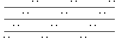
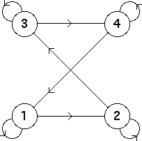

3. (c)
|  |
| The bin transitions are |
| Consequently, the occupied length 2 addresses are 11, 21, 22, 32, 33, 43, 44, and 14. |
| The empty length 2 addresses are the remaining eight: 12, 13, 23, 24, 31, 34, 41, and 42. |
These bin transitions can be encoded in the transition graph
|  |
Return to Exercises.